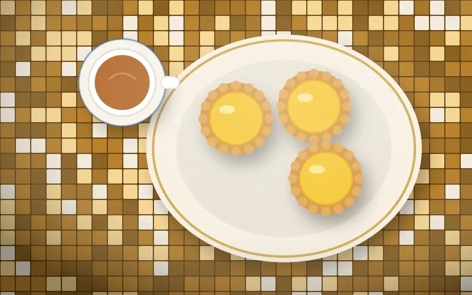

餅 · Bakery平EVERYDAY
Sha Tin · Sha Tin
Kee Wah Bakery (Sha Tin)
奇華餅家（沙田）
Egg rolls + mini wife cakes蛋卷 + 迷你老婆餅
~$38typical spend
53/100
HK Cheap Eats Value Score · Average valueEstimated from the editors’ rating, price vs similar bakery places and MTR access. Portion size and customer reviews aren’t scored yet. How it’s calculated
- Hours
- 09:00 – 21:30
- Best for
- Afternoon tea
- Nearest MTR
- Sha Tin 沙田 · 1 min walk
- Pay with
- Octopus · Card · FPS / PayMe
- Cuisine
- Bakery 餅店 · veggie options
- Area
- Sha Tin 沙田 · Sha Tin 沙田區
- Status
- Unverified
- Source
- HK Cheap Eats editors
- Listed
- 19 Nov 2026
- Price last checked in store
- Not yet
Picture is an illustration, not a photo of this restaurant. Spotted a wrong price or hours? Suggest a correction in the app.